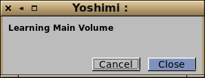
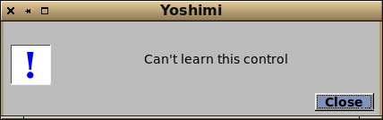
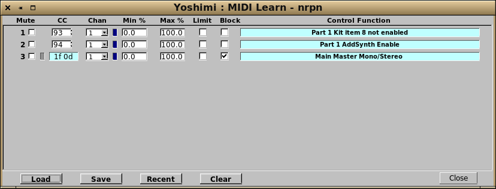
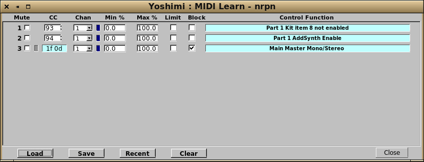
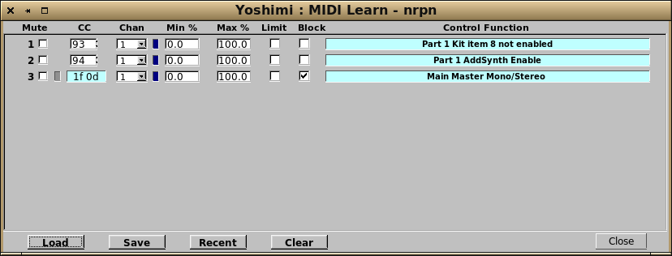

MIDI learn provides the ability for almost any CC or NRPN to directly modify any of Yoshimi's available controls. In fact you can also learn some channel mode messages that are given pseudo-CCs. These are Pitch Bend (128), Channel pressure (129), Key pressure (130).
To use this, you hold down the Ctrl key, then click on the knob/slider you want to link to. This will pop up either of the two windows below depending whether or not the control is learnable.


If the control is learnable, moving any of the recognised MIDI controls will pop up the MIDI learned window, with all the details.

In the example shown, you can see that learned controls are displayed as lines of settings, followed by a description of what is actually being managed. All controls are then editable, with the exception of NRPN numbers.
(controls)
Mute This completely disables this line only. Bear in mind that if it had been blocking later lines, that will no longer be the case.
CC The incoming CC to respond to. In the case of NRPNs this is presented as two hexadecimal 7bit values.
Chan The incoming channel to recognise. The last entry in the menu allows all channels to be effective for this line.
Min The minimum control value to accept as a percentage of the input.
Max The maximum control value to accept as a percentage of the input. If Max is less than Min, the control action is reversed.
Limit Normally Min and Max compress the incoming value to the range set, however if Limit is set then the range is unchanged, but values outside will be set to these limits. If min is equal to max this becomes a switch point and values either side will be treated as 0% or 100%.
Block This will block any further lines from receiving this exact CC/channel pair. This includes all other Yoshimi controls except Vectors.
To clear an individual line hold down the Ctrl key and click on the description field of the one you want to remove.
Note:
You can have multiple lines responding to the same CC/Channel pair but performing different actions.
(buttons)
Load Opens a window for loading a complete list of learned lines.
Save Opens a window for saving the current list of learned lines.
Recent Opens a small window for selecting recently seen lists.
Clear Deletes the entire current list.
For any given CC, MIDI learn takes priority over the Solo feature, but is itself over-ridden by Vectors
 If the control is learnable, moving any of the recognised MIDI controls will pop up the MIDI learned window, with all the details.

If the control is learnable, moving any of the recognised MIDI controls will pop up the MIDI learned window, with all the details.
